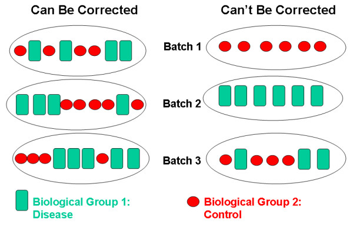

Common Causes of Irreproducibility
Last updated on 2025-05-06 | Edit this page
Overview
Questions
- What are some common reasons for irreproducibility?
Objectives
- Describe a conceptual framework for reproducibility.
- Explain how and why adopting reproducible practices benefits research.
Solutions for irreproducible research
Solutions for irreproducible research already exist and are freely available. The open science movement encourages practices like data sharing and preregistration with an aim to make research freely available to everyone. Adopting open science practices accelerates scientific progress and increases trust in research findings. Greater transparency and sharing improves research reproducibility.
Reproducible research depends on understanding how experiments were
performed and how data were generated. There are two critical elements
to improve reproducibility:
1. Increased transparency and sharing of research reagents, methods, and
data
2. Accelerated sharing of results (preprints)
from Reproducibility for
Everyone
Pre-registration is public sharing of your research and analysis plan prior to starting a study by submitting it to a registry like that hosted by the Center for Open Science. Pre-registering increases research transparency and rigor, which may boost public confidence in federally funded research. Pre-registering can prevent overfitting, which happens when analysis decisions are too specific to a particular sample or study. Pre-registering also prevents some questionable research practices like p-hacking, cherry picking, or hypothesizing after results are known (HARKing).
Data sharing starts by making a data sharing plan at the outset,
before collecting any data. Data should be “as open as possible and
as closed as necessary.” The parts of the data to share should
include:
1. The raw data
2. A tidy data set
3. A data dictionary describing each variable and its values in the tidy
data set
4. An explicit and exact recipe you used to go from the raw data (1) to
tidy data and the dictionary (2,3).
adapted from Ellis SE, Leek JT.
2017. How to share data for collaboration. PeerJ Preprints
5:e3139v5
Scripts to analyze the data can also be shared on platforms like Github. Reagents and methods can be shared in appropriate repositories.
| Data Sets | Reagents | Scripts | Methods | Paper | |
|---|---|---|---|---|---|
| What | Data sets | New reagents, model organisms | Analysis scripts | Detailed methods & protocols | Preprint ahead of publication |
| Where | Repository | Repository | Developer platform | Repository | Preprint server |
| Example | Dryad | Addgene, Flybase | Github | protocols.io | AfricArXiv, BiorXiv, MedRxiv |
Accelerated sharing of research resources from Reproducibility for Everyone
P-value interpretation
A p-value can indicate a statistically significant difference between study groups. It is not enough, though, to report only a p-value. The p-value says nothing about the effect size (the observed difference between groups). If the effect size was tiny, say .01 or less, would it matter how small the p-value is? The effect is negligible, so the p-value does nothing to demonstrate practical relevance or meaning. We should question how large the effect is.
A p-value can only tell us whether an effect exists. However, a p-value greater than .05 doesn’t mean that no effect exists. The value .05 is rather arbitrary. Does a p-value of .06 mean that there is no effect? It does not. It would not provide evidence of an effect under standard statistical protocol. Absence of evidence is not evidence of absence. There could still be an effect.
P-values report statistical significance of an effect, but what we want is scientific significance. Confidence intervals include estimates of the effect size and uncertainty associated with these estimates. When reporting results, use confidence intervals.
A p-value is the probability of observing a statistic that extreme if the null hypothesis is true.
The p-value is not Probability the null is true Probability the alternative is true A measure of statistical evidence
Suppose 550 out of 10,000 genes are significant at 0.05 level
P-value < 0.05 Expect 0.05*10,000 = 500 false positives - Jeff Leek
Batch effects
no randomization with randomization still batch effects due to technician, time of day, weather, or any other variable not under study that influence the study nevertheless. Randomization balances out these other variables 
Small sample size and low power
Small sample size is often cost per sample statistical power is the power to detect a real effect if it exists
Review the following figure to explore the relationships between effect size, sample size, and power. What is the relationship between effect size and sample size? Between sample size and power?
Code adapted from How to Create Power Curves in ggplot by Levi Baguley
Notice that to detect a standardized effect size of 0.5 at 80% power, you would need a sample size of approximately 70. Larger effect sizes require much smaller sample sizes. Very small effects such as .01 never reach the 80% power threshold without enormous samples sizes in the hundreds of thousands.
Key Points
- Reproducibility has many definitions.
- We define reproducibility here as using the same data and methods as the original study.
- Adopting reproducible practices strengthens science and makes it more rigorous.